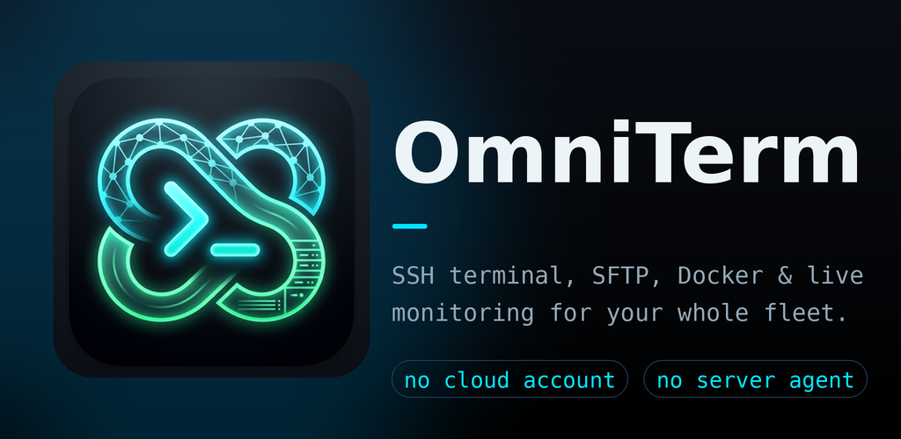

Terminals
SSH sessions that run in the background, split-screen for two hosts, tmux-backed sessions that survive dropped connections, a special-key bar, themes and search. Telnet and USB serial for network gear and consoles.
OmniTerm is an open-source, native Android app for SSH terminals, file management, containers, live monitoring, alerts and automation. It connects straight from the device to your hosts: no cloud account and no agent to install on your servers.

People who look after their own machines: homelab owners, self-hosters, and administrators of small fleets who want to check on a server, restart a container or run a script without reaching for a laptop. You need an Android phone or tablet and SSH access to your hosts.
There is no OmniTerm service to sign up for. The app talks to your hosts directly and runs no backend for telemetry, analytics, advertising, crash reporting or credential sync.
Monitoring and management use SSH and each host's own tools (Linux /proc, systemd, package managers, Docker, kubectl). Nothing is installed on your servers unless you choose to add a helper such as tmux.
Background sessions, a special-key bar, landscape layouts, biometric lock, notifications for alerts, Wake-on-LAN, and links and sharing from other apps.
SSH sessions that run in the background, split-screen for two hosts, tmux-backed sessions that survive dropped connections, a special-key bar, themes and search. Telnet and USB serial for network gear and consoles.
An SFTP browser with an editor, archives and dual-pane transfers, plus SMB, FTP and WebDAV shares. Copy between any share and any host, streaming large files.
Docker and Podman containers, stacks, images and volumes with logs, stats and exec shells; a Compose builder that validates before deploying; Kubernetes pods, deployments, services and nodes.
Live CPU, memory, disk, load, temperature and I/O read from standard tools, a hardware spec sheet, and alert rules for usage, TLS expiry, URLs, ping, ports, DNS, ZFS, UPS, reboots and your own script checks. Forward alerts to ntfy, Gotify or a webhook.
Run a command or saved script on many hosts with live output, rolling runs that stop on failure, retry on failed hosts, tmux-backed runs and a history. Scripts can ask for values safely at run time.
Let Tasker or another app run one saved script with a token you made. Optionally let Claude Code, Gemini CLI or Codex read hosts you choose and ask to run scripts, with every run approved on your phone. Both are off until you turn them on.
Reach hosts through WireGuard without using Android's VPN. Only OmniTerm's connections to the hosts you choose use the tunnel, and such a host never falls back to a direct connection.
Host scan, Wake-on-LAN, ping, traceroute, port scan, DNS, WHOIS and speed test. Selective AES-256-GCM encrypted backups of your app data.
Read the security summary, the full privacy policy and the vulnerability reporting policy. This website uses no cookies, analytics or third-party resources.
Built from this repository and published as an APK on the GitHub releases page. No host limit, no ads, no purchases, no Google SDKs. It installs as com.jetsetslow.omniterm.app.oss and can sit beside the Play Store app.
OmniTerm on Google Play. Free for one saved host with a banner ad. Two one-time purchases: Remove Ads, or Unlock to lift host limits and enable Quick connect, Telnet and USB serial.
Both builds share the same core features. Getting started walks through installing and adding a first host.
OmniTerm credits the projects whose ideas and bug reports shaped it, such as Semaphore UI, Komodo, Beszel, Uptime Kuma, ConnectBot, Termux:Tasker and electerm. No code is copied from them. See the notices and the README's acknowledgements.
OmniTerm is free and open-source software under the GPL-3.0 (see LICENSE). The Play Store build additionally includes Google's billing and ads libraries, which are not part of the repository. The OmniTerm name and logo are not covered by the licence.